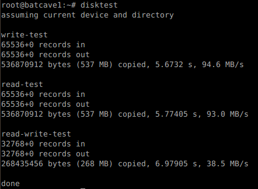

| Lubuntu
linux Tips |
Handy
Scripts |
Quick Disk
Speed Test Quick Mount/Unmount CleanOut Trash Free Memory |
| Scripts are small programs written in text that
Linux can run immediately (without compilation.) After writing a script in a text editor, save it and make it executable; e.g chmod 755 myscript
Here are some handy bash scripts. Quick Disk Speed Test There's a copy program called dd that displays speed info by default that we can use; disktest works in the current directory or you can specify a device e.g disktest sda1 disktest
#!/bin/bash
if [ `whoami` != root ]; then echo Please run as root or sudo; exit fi if [ "$1" == "" ]; then echo assuming current device and directory else echo device $1 mkdir /mnt/$1 2> /dev/null mount /dev/$1 /mnt/$1 cd /mnt/$1 fi echo echo write-test sync dd if=/dev/zero of=test.data bs=8k count=64k echo echo read-test sudo sh -c "echo 3 > /proc/sys/vm/drop_caches" sync dd if=test.data of=/dev/null bs=8k count=64k echo echo read-write-test sudo sh -c "echo 3 > /proc/sys/vm/drop_caches" sync dd if=test.data of=test.out bs=8k count=32k echo done. 
Quick Mount / Unmount push <dev> mounts a drive e.g push sda1 the drive is found at /mnt/sda1 pop <dev> un-mounts a drive e.g pop sda1 push
#!/bin/bash
Activate user permissions and go into the directory.umount /dev/$1 2>/dev/null mkdir /mnt/$1 2>/dev/null mount /dev/$1 /mnt/$1 -o uid=batman -o gid=batman cd /mnt/$1 pop
#!/bin/bash
Leave directory and unmount.cd ~ umount /dev/$1 CleanUp Trash cleanup
#!/bin/bash
sudo rm /home/batman/.cache/chromium/Default/Cache/* sudo rm -r /home/batman/.opera/cache sudo rm -r /home/batman/.opera/application_cache sudo rm -r /home/batman/.opera/opcache sudo rm -r /home/batman/.opera/pstorage sudo rm -r /home/batman/.opera/vps sudo rm -r /home/batman/.opera/temporary_downloads sudo rm /usr/share/icons/gnome/icon-theme.cache sudo rm /usr/share/app-install/icon-theme.cache sudo rm /var/log/*.gz sudo rm /var/log/*.old sudo apt-get clean sudo apt-get autoclean sudo apt-get autoremove -y sudo rm /var/cache/apt/pkgcache.bin sudo rm /var/cache/apt/srcpkgcache.bin This is a script I routinely use to maximise storage. If you don't use the opea browser, you can delete those lines. Free Up Memory freemem
#!/bin/bash
free -m sync sudo sh -c "echo 3 > /proc/sys/vm/drop_caches" sync free -m This shows memory before and after dropping the cache. |
| More
Lubuntu Tips |